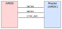

Firmware¶
Description of the architecture design of the AMDS mainboard firmware.
Introduction¶
This document outlines the firmware architecture which runs the AMDS mainboard. By understanding how the mainboard works, users will be able to understand the performance limitations of the system. While the current firmware design will work for most applications, some users will find that the design must be tweaked to meet their system performance goals. Potential ideas for improvements are provided in the following sections which could be implemented in the future.
The main goal of the AMDS mainboard is to interface voltage/current sensor cards to an external control board (typically the AMDC). Therefore, the AMDS platform should be thought of as a slave to the main controller (master). In steady-state operation, the master is responsible for triggering the AMDS to do two things:
Sample the analog signals on the sensor cards
Send the latest data to the master
Since the AMDS is typically used in motor drives, these operations happen in real-time at 1000s of times per second. To facilitate the desired real-time operation, the AMDS has an embedded processor which orchestrates its behavior. The firmware running on this processor directly determines the performance of the sensor interface in terms of sampling latency and throughput.
Architecture¶
While the architecture of the AMDS firmware is fairly simple, the I/O interface, priority of code, and latencies are critical to the overall performance.
Interface to Master¶
The AMDS firmware is designed to interface to the master controller over four logical wires: 2x TX and 2x RX. Physically, these signals are all diff pairs for noise immunity.

RX Signal: SYNC_ADC¶
One of the two signals, SYNC_ADC, is used to trigger ADC sampling. This signal is a square wave where, on each edge, the AMDS samples all the sensor cards on the mainboard. Both rising and falling edges trigger the ADCs. Normally, the master triggers a transition on this RX signal when the PWM carrier is at a peak or valley. This synchronizes the ADC sampling to the inverter PWM, thus reducing sampling noise.
RX Signal: SYNC_TX¶
The other RX signal, SYNC_TX, is used to trigger the AMDS to transmit the latest ADC samples back to the master. It is also a square wave. On each edge transition, all eight ADC samples are streamed to the master.
TX Signals: DATA1 and DATA2¶
The two TX signals are controlled by the AMDS and go to the master. These are only used to send ADC sample data to the master. When the SYNC_TX RX signal is triggered, the AMDS starts sending the latest data to the master using the two TX wires. Two lanes are used so that the data can be transmitted at twice the speed, thus reducing latency.
The format of the data sent on the TX signals is UART. This means there is no clock line between the master and AMDS: the interface is completely asynchronous. The UART is configured to run at 25 Mbps. Conceptually, the TX lines are actually two distinct UART devices, each with only one-way communication. Both UARTs are configured as 8-bit data, 2 stop bits, and odd parity.
Data Format¶
The ADCs on the sensor cards are assumed to be 16-bit devices which are all compatible with each other (i.e. they can be daisy-chained and support equal clock rates). See each sensor card’s hardware design files for specs on the specific ADCs which are supported. The 16-bit raw data from the ADCs are packed into bytes which are sent across the DATA1 and DATA2 UART lines. DATA1 is used to send the contents of the first four sensor cards and DATA2 sends the last four sensor card data. The transmissions happen in parallel between the data lines.
The message structure is equal between both DATA1 and DATA2. However, each message corresponds to different sensor cards between DATA1 and DATA2 (i.e. 1-4, 5-8). Data is sent LSB first across the wire.
Packet 1: (first packet sent across DATAx line)
Byte 0 |
Byte 1 |
Byte 2 |
|---|---|---|
0x90 |
MSB of sample 1 |
LSB of sample 1 |
Packet 2:
Byte 0 |
Byte 1 |
Byte 2 |
|---|---|---|
0x91 |
MSB of sample 2 |
LSB of sample 2 |
Packet 3:
Byte 0 |
Byte 1 |
Byte 2 |
|---|---|---|
0x92 |
MSB of sample 3 |
LSB of sample 3 |
Packet 4: (last packet sent across DATAx line)
Byte 0 |
Byte 1 |
Byte 2 |
|---|---|---|
0x93 |
MSB of sample 4 |
LSB of sample 4 |
NOTE: there is no full CRC included in the transmission. The simple protocol relies on the parity check in the UART packet. This is not a terribly robust approach, but has worked well is moderate EMI environments.
Interrupt-Driven Design¶
After start-up, the AMDS firmware is completely interrupt driven. This means that all processing occurs within interrupt contexts, not the main loop. There are two interrupts which are used to drive the firmware: one on the SYNC_TX signal edges and one on the SYNC_ADC signal edges. The SYNC_TX is the highest priority ISR, meaning it will interrupt all other code. The SYNC_ADC is lower priority.
The typical flow is as follows:
The master is operating its PWM output and thus triggering the
SYNC_ADCISR periodically. Therefore, the ADCs on the sensor cards have been read and the latest data is stored in the AMDS memory.The master needs to get the latest data. It then triggers the
SYNC_TXISR which takes over the AMDS to send the latest data back to the master. Once the data is sent, the ADC sampling may continue.
Note that when the SYNC_TX ISR fires, the AMDS starts the SYNC_ADC synchronization process over. Without doing this, the next sample would not be aligned to SYNC_ADC and therefore introduce noise due to drifting from the PWM carrier.
Performance Limitations¶
The AMDS firmware design directly affects the operation limits of the SYNC_TX and SYNC_ADC signals. It will continue to work up to some threshold, at which point some ISRs will be missed and the performance will drop. However, the system will not “crash” – it will continue to work, albeit not as well.
The maximum ADC sampling rate is limited to about 280kHz. This means that each edge of SYNC_ADC can occur every 3.6usec. Practically, this means that PWM switching of 100kHz is supported since that would result in 200kHz sampling (both peak and valley of carrier). At 200kHz sampling, each edge of SYNC_ADC occurs every 5usec. Note that the AMDS firmware always assumes all eight sensor cards must be sampled. Even when they are not populated, the firmware timing remains as if all sensor cards were in pairs of daisy chains. This acts to limit the overall sampling throughput.
The latency for data transmission back to the master over the TX signals is about 6usec total. This means that all eight sensor cards can be read at more than 100kHz. Practically, the bandwidth of the TX data is not the issue since control typically only runs at 10-20kHz. However, the 6usec latency is important. This means that, for 10kHz control (i.e. Ts = 100usec), at least 6% of the control period is taken by simply transmitting data back to the master. This does not include the delay in sampling from the ADC devices, which is about 1.3usec. Therefore, a conservative estimate of the latency from the AMDS is about 10usec.
Performance Specifications¶
Given a control frequency of Fs and PWM switching frequency of Fsw, the following constraints must be satisfied for the AMDS firmware to perform well:
Fsw<= 100kHz2 x
Fs<=Fsw
For application with SiC or GaN inverters where Fsw is typically much faster than Fs, the AMDS firmware works well.
Warning: When Fs is close to Fsw (i.e. control frequency is equal to PWM frequency), the current AMDS firmware design will not work well.
Future Improvements¶
The AMDS firmware works, albeit with limitations as described above. Some ideas to improve the system are now described:
The AMDS cannot be configured from the master. Improvements could use an additional TX/RX pair to enable simple register protocol for config. This could be used to set digital filter bandwidths, turn on/off sensor card slots for faster sampling, etc.
The
SYNC_TXandSYNC_ADCISR priorities should probably be flipped. In other words, the ADC sampling should be highest priority. This would mean that the sampling would never miss alignment with the PWM carrier. However, this places a burden on the master since it must turn off requests for ADC sampling when it wants to receive new data. If the master kept telling the AMDS to sample the ADCs at all times, it could never send the data back since the sampling ISR would be highest priority.The ADC sampling throughput could be improved above 280kHz. Theoretically, the ADC devices support upwards of 1Msps, or 500ksps in two device daisy chain. This would probably require shortening the delay when the ADC is doing the sampling. The latest AMDS mainboard provides
BUSYsignals for each ADC which can be used for ISRs to end the ADC sampling window. These are not used in the current firmware. Instead, the simpler approach of busy waiting until the max timeout occurs is used (i.e. wait for 1300ns). However, the nominal wait time is only about 50% of this.There is no robust CRC error detection on the data transmission from the AMDS to the master device, although the UART parity is used. Future improvements could add a footer CRC to ensure the received message at the master is valid. Error correction codes could also be used to further increase the communication robustness in high EMI environments (e.g. SECDED). There is no free lunch: all of these methods would increase the data transmission latency from the AMDS.